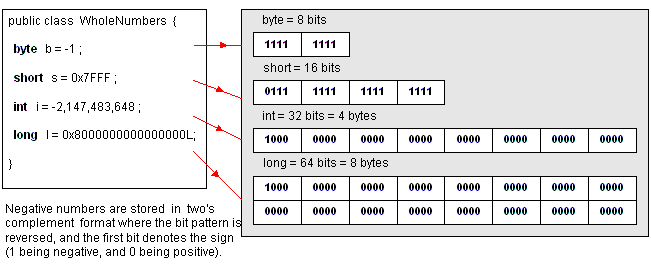

|
Java integer datatypes come in four precisions,
byte (8-bit), short
(16-bit), int (32-bit) and long
(64 bits). By default integer instance variables are initialized to zero.

To interpret a negative twos complement binary number, flip all the bits
and add 1 to get the corresponding positive value.
Gotcha! Java will generate an ArithmeticException
at runtime if your code attempts to divide an integer value by zero. Java
integer arithmetic does not generate values for infinity or imaginary
numbers.
Literal integer values can be written as decimal digits 0
thru 9 with a sign. By default the int
datatype is used for integer literals. If you are dealing with integer
values over 2 billion you should make use of the long
datatype which reserves more memory for very large whole number values.
If you specify a very large integer literal value, you must suffix it
with the letter L, to let the Java compiler know to reserve a long (64-bit)
storage area for the value, instead of the default integer (32-bit) storage
area.
int x = +2147483647; //is
the largest positive integer
int y = -2147482648; //is the smallest integer value
long bigNothing = 65536 * 65536; //integer arithmetic
overflows to zero!
long bigNumber = 65536L * 65536; //long
arithmetic evaluates to 4294967296
You might be scratching your head at those last 2 lines, the asterisk
is Javas way of saying multiply two values.
- So why does bigNothing end up with zero
? Well 65536 multiplied by itself, is too big to fit into a 32-bit integer.
The result overflows and Java ignores that fact and just truncates the
most significant bits leaving an answer of zero!
- Why does bigNumber get the correct value
assigned ? Well in this case, Java sees that one of the values is marked
as a long value, and it widens the other value to a long also.
The arithmetic is done using 64-bits (instead of the default 32-bits)
and the result does not overflow. We'll talk more about how Java casts
and converts datatypes when doing arithmetic
on the following page.
Danger! Java arithmetic does not
generate Exceptions when a numeric value overflows or underflows its storage.
Apparently this is for robustness, but it is a contentious issue, because
the runtime silently truncates the result. In Java arithmetic it is important
to use a dataype large enough to hold the largest and smallest expected
results.
Tip! Try to avoid coding numeric literals (constants) inside your
methods, it is better practice to define them as public
static final data variables with an initial value like this :
public static final int DAYS_IN_WEEK = 7;
The convention is to use all CAPS for names of constants.
Integer values can also be expressed as hexadecimal (base 16) numbers,
with a prefix of 0x and the digits 0
thru 9 and A thru
F (representing decimal values 10 thru 15) :
int x = 0x7FFFFFFF; // is the largest
hex integer
int y = 0x80000000; // is the smallest hex integer
You can express integers in octal (base 8), by prefixing the value with
a zero, and using the digits 0 thru 7
only. Gotcha! If you write leading
zeros on a value, Java may interpret it as an octal value.
|